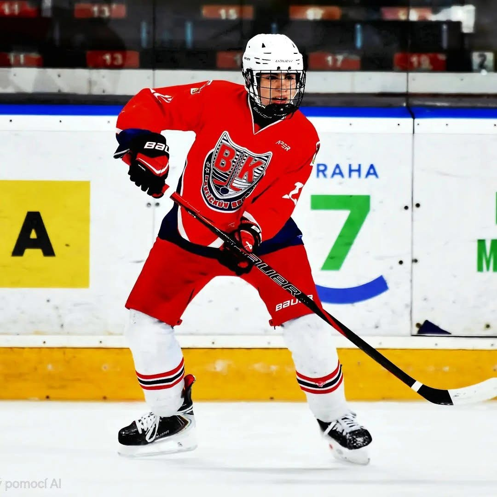

12Základních skupin
24Postupujících týmů
4 × 6Nadstavbové skupiny
Nadstavbové skupiny
Předpokládané složení podle aktuálního pořadí a územního principu.
Upozornění: Rozdělení do skupin A–D je nezávazný geografický návrh, nikoli oficiální rozlosování Českého hokeje. O postupu rozhoduje konečné pořadí po první části.
1. část – skupina 8
Aktuální základní skupina BK Havlíčkův Brod a statistiky hráče Petra Pálka.
Načítám tabulku skupiny 8…

Načítám statistiky…
Do výběru se podle systému soutěže nezapočítávají EAC Junior Capitals a METROPOLIA Silesia. Pořadí se přebírá z oficiálních tabulek, nikoli vlastním přepočtem. Server kontroluje data přibližně každé dvě hodiny; kliknutím na „Zkontrolovat nejnovější data“ se načte aktuální publikovaný soubor, nikoli přímo data ze zdrojového serveru.